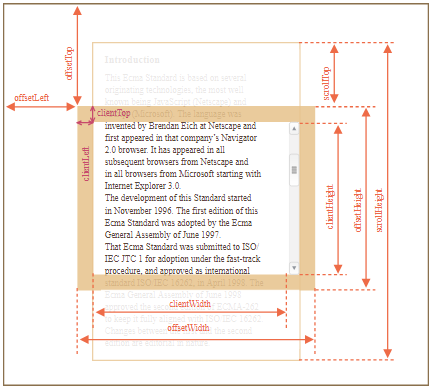
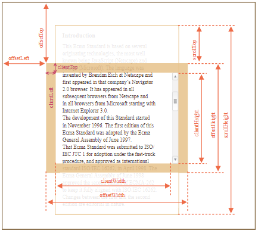

Tanýtým
Bu Ecma Standardý, eniyi bilinenleri JavaScript (Netscape) ve JScript (Microsoft) olmak üzere birçok orijinal teknolojiler üzerine temellenmiþtir. JS programlama dili Netscape'deki Brendan tarafýndan icat edilmiþ ve ilk olarak ilgili þirketin Seyrüsefer 2.0 tarayýcýsýnda ortaya çýkarýlmýþtýr .
Müteakiben Netscape'in ve Internet Explorer 3.0'dan baþlayarak Microsoft'un tüm tarayýcýlarýnda kullanýlmýþtýr. Bu Standardýn geliþmesi 1996 Kasýmýnda baþlamýþtýr. Bu Ecma Standardýnýn ilk sürümü 1997 Haziran tarihli Ecma Genel Kurulunca benimsenmiþtir.
That Ecma Standard was submitted to ISO/IEC JTC 1 for adoption under the fast-track procedure, and approved as international standard ISO/IEC 16262, in April 1998. The Ecma General Assembly of June 1998 approved the second edition of ECMA-262 to keep
it fully aligned with ISO/IEC 16262. Changes between the first and the second edition are editorial in nature.
Standardýn üçüncü sürümü güçlü regex ifadelerini, daha iyi dizge yönetimini, yeni kontrol ifadelerini, try/catch istisna yönetimini, daha titiz hata tanýmýný, sayýsal çýktýlar biçimlenmesini ve geliþen uluslararasýlaþma olanaklar ile gelecekteki dil geliþimi beklentili küçük deðiþiklikleri
içermektedir. The third edition of the ECMAScript standard was adopted by the Ecma General Assembly of December 1999 and published as ISO/IEC 16262:2002 in June 2002.

. . . . . . . . . . . . . . . . . . . . . . . . . . . . . . . . . . . . . . . . . . . . . .
. . . . . . . . . . . . . . . . . . . . . . . . . . . . . . . . . . . . . . . . . . . . . . . . . . . . . . . . . . . . . . . . . . . . . . . . . . . . . . . . . . . . . . . . . . . . . . . . . . . . .
. . . . . . . . . . . . . . . . . . . . . . . . . . . . . . . . . . . . . . . . . . . . . . . . . . . . . . . . . . . . . . . . . . . . . . . . . . . . . . . . . . . . . . . . . . . . . . . . . . . . .
. . . . . . . . . . . . . . . . . . . . . . . . . . . . . . . . . . . . . . . . . . . . . . . . . . . . . . . . . . . . . . . . . . . . . . . . . . . . . . . . . .
 
